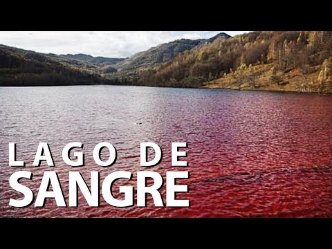
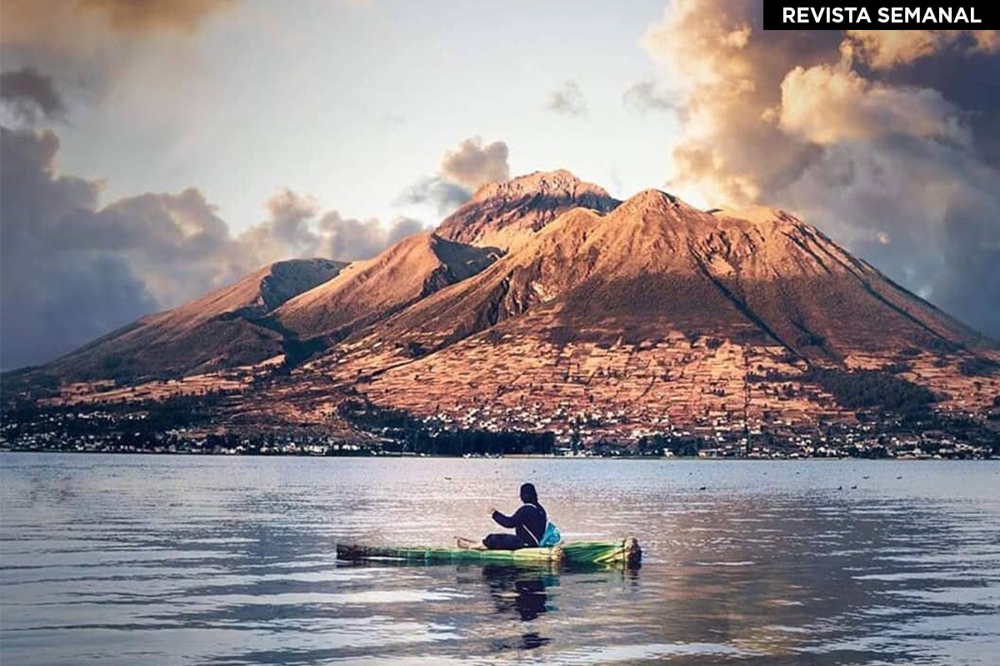
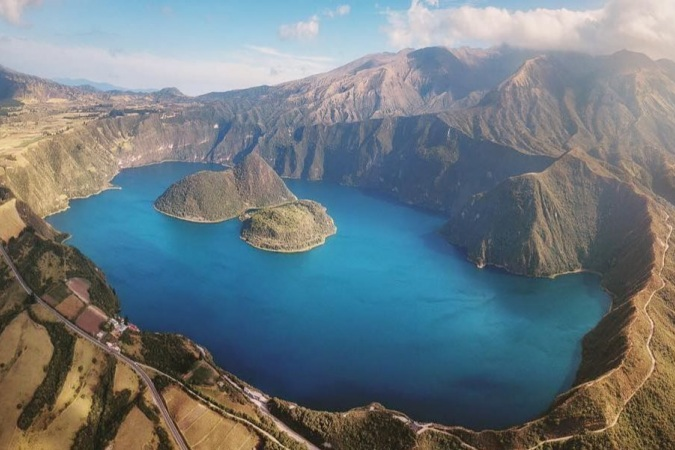

Destinos
  El Cuicocha es el centro eruptivo más joven del Complejo Volcánico y se habría desarrollado en los últimos 10.000 años (Von Hillebrandt, 1989); consiste de una caldera con cinco domos dacíticos .....

El Cuicocha es el centro eruptivo más joven del Complejo Volcánico y se habría desarrollado en los últimos 10.000 años (Von Hillebrandt, 1989); consiste de una caldera con cinco domos dacíticos .....